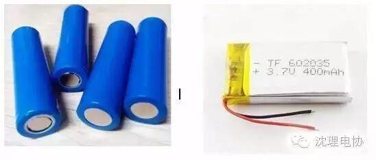
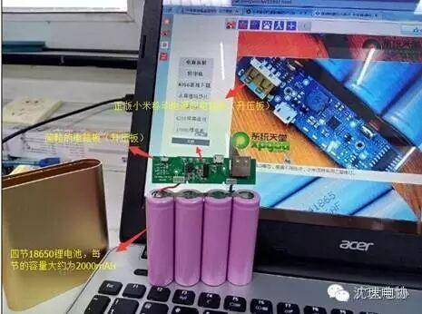
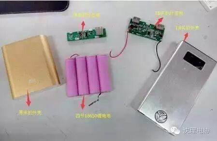
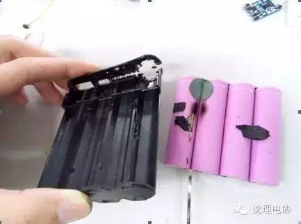
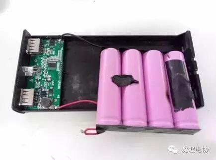
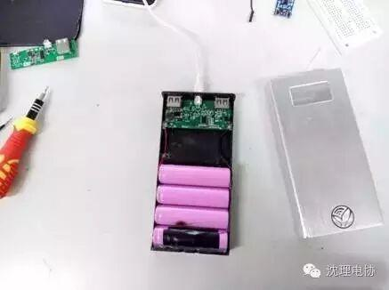
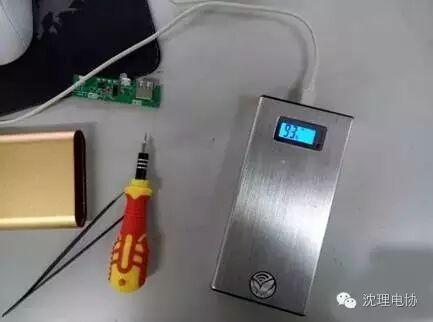

使用小程序
本AI的话：勇哥在这篇文章里主要给我们讲了锂电池的知识和怎么自己做一个移动电源。于是我们就能做完开心的拿去卖啦
Part 1:锂电池知识科普
（1）锂电池的正常工作电压在2.4V至4.2V之间，平均工作电压为3.7V，充电至4.2V以上称作“过充”，放电至2.4V以下称作“过放”（这里的2.4V称作截止放电电压，不同型号的截止放电电压不同，一般在2.4V至3.2V之间），过充与过放都会对锂电池造成致命的伤害。
（2）锂电池根据导电介质的不同可分为液态锂电池（左，18650电池）和聚合物锂电池（右，手机的电池就属于这种），具体差异可自行百度。

（3）锂电池凭借其高能量密度、高电压、无污染、循环寿命高、无记忆效应、快速充电等多种优势成为目前消费电子产品里使用最为广泛的电池。
（4）然而，不要以为锂电池被应用这么广泛就意味它很安全，相反，锂电池非常危险！不信？你把它短路试下？而且锂电池特别“娇气”，在使用过程要给锂电池提供防止过充、过放及短路的保护。
（5）锂电池的内阻很小，因而其放电电流非常大，一般都有1C以上（即如果电池容量为1500mAH，那么它可以以1500mA的电流放电1小时，此时电池的端电压刚好为截止放电电压），更变态的可达5C（多用在四轴飞行器上）。如此大的放电电流，一旦将它短路，后果就不只是对锂电池造成致命伤害了这么简单了。相比之下我们平时所用干电池的内阻比锂电池大，放电电流比锂电池小得多，所以短路的时候也只是冒出些零星的火花。
Part 2:DIY你的移动电源
● 工作原理
前面说过锂电池的正常工作电压为2.4V至4.2V，而手机充电器的输出电压和手机的输入电压则都为5V，因此需要解决电压升降的问题，而这就是电路板（升压板）要做的事情了。
充电器给移动电源充电时，电路板里的充电管理芯片会自动将5V转化为4.2V为电池充电；而在移动电源给手机充电时，电路板里的升压电路能从电池的端电压升至5V然后再向手机输出电流。
工具：
斜口钳或其他适合用来暴力拆解的工具
电烙铁
热熔枪
螺丝刀
镊子等。
材料：
废旧移动电源（或废旧锂电池或买新的锂电池）
整合充电管理与升压的升压板（TB解决）
移动电源的外壳（TB解决或自己制作）
焊锡
① 拆解废旧移动电源获得废旧锂电池，直接有锂电池的可跳过此步骤。

本人拆的是一个山寨的小米移动电源（很久之前我不识货的亲属买的，用了一次就充不进电了），拆出来后发现它的电路板简略到我想哭，只有一个单片机，连个锂电池管理芯片都没有。没有这个管理芯片，锂电池很容易就会过放或者过充。好在里面的锂电池充下电后还能继续使用，所以我才能完成这个实验。
拆的过程我就不详细描述了，因为每个人的情形不同。
至于身边没有废旧锂电池准备上淘宝的同学，建议你们买销量最高的，不要盲目追求大容量，淘宝的陋习，你懂的。
还有一点非常重要，所使用的电池必须保持电压一致，绝对不能把新旧电池混在一起，否则会使管理芯片对充电电压和电流的检测出错！
②获得电路板（升压板）和移动电源的外壳
升压板这种东西自己做不大现实，当然是直接淘宝解决啦。因为移动电源的市场早就非常成熟，各种移动电源配件多得直让人眼花缭乱，可根据自行需求选择单供电或双供电、1A输出或2.1A输出，另外一般都集成有电量显示、照明、防止过充过放短路功能。
至于外壳，建议跟升压板在同一家店购买，因为一家店的外壳只能和同一家店的升压板对得上（电池则不管哪种外壳都肯定对得上）。动手能力强的可以买些木板或亚克力板自己定制；甚至不要外壳，直接将升压板和锂电池绑在一起都行，只要不会被地铁站里的安防警察误以为是TNT炸药然后立马把你摁倒在地。
我的升压板和外壳都是从TB买的。贴纸自己贴的。

③组装移动电源
直接将升压板的两条导线分别焊到锂电池的正负极上（注意正负极！注意正负极！注意正负极！重说三！）
下图就是我测试时不小心将锂电池短路2秒后的结果，直接冒烟，电池绝缘层和塑料盒烧融。好在电池没有烧坏。

装到移动电源外壳里时，为了防止意外再次发生，我用绝缘胶布分别盖住正负极。

然后粘一些热固胶固定。


看完之后也许你会发现，原来移动电源就这么简单？
当然，因为这只是普通的对移动电源各个配件进行组装而已。
而实际上值得深究的就只有那块升压板，
想深入了解的话可以联系我，我们来聊聊人生。
本人学识尚浅，若有不当之处欢迎指正。
Written by 信息部/黄治勇
2016-9-13
本文章为沈理电协原创，转载需注明出处。